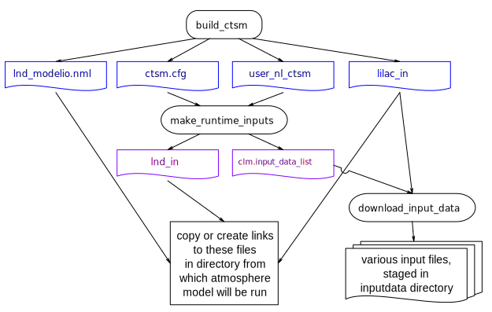

3.2.2. Setting CTSM runtime options¶
3.2.2.1. Overview and quick start¶
This section describes the process for creating the runtime input text files for CTSM and LILAC. These files, which are in Fortran namelist format, have hard-coded file names. These files must exist with the expected names in the directory from which the model is run:
lnd_in: This is the main namelist input file for CTSMlnd_modelio.nml: This sets CTSM’s PIO (parallel i/o library) configuration settingslilac_in: This namelist controls the operation of LILAC
Note
There are a number of other required runtime input files to both CTSM and LILAC, in
NetCDF format. The paths to these other files are specified in either lnd_in or
lilac_in.
The basic process for creating the necessary input files is the following; this process is also illustrated in Figure 3.2.1:
- Run the
build_ctsmscript described in section 3.2.1. In addition to building CTSM, this also stages the necessary files in theruntime_inputssubdirectory of your specified build directory. Thencdto thisruntime_inputssubdirectory to do the following steps (it is fine to do these steps even while CTSM is still building). - Modify the
ctsm.cfgfile to set high-level options to CTSM. (A few options need to be set; most can be left at their default values or changed if desired.) Optionally, also set specific namelist values inuser_nl_ctsm. - Run the script,
make_runtime_inputs. (This creates the fileslnd_inandclm.input_data_list.) - Modify
lilac_inas needed. (Typically you will only need to set values foratm_mesh_filenameandlnd_mesh_filename; other variables can typically be kept at their default values.) - Run the script,
download_input_datato download any of CTSM’s standard input files that are needed based on settings inlnd_inandlilac_in. (This step may be unnecessary if all of the needed input data already exists. However, it doesn’t hurt to run it in this case.) - Copy
lnd_in,lnd_modelio.nmlandlilac_into the directory from which you will be running the model.

Figure 3.2.1 CTSM/LILAC runtime file workflow. Files in black can be (and in some cases must be) edited before running the next step. Files in blue should not be edited directly.